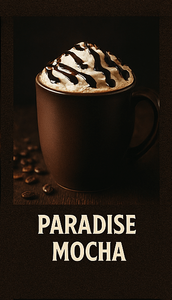

CAFÉS QUE VALEM UM SOLO

Sweet Espresso o’ Mine

Paradise Mocha
November Rain Latte
Welcome to the Cappuccino
Black Coffee Parade
Rocket French Roast
Espresso Metal
Café Trasher
Slash Café não é só mais uma cafeteria... é o riff perfeito entre aroma, sabor e atitude! Fundada pelo lendário guitarrista Slash, essa joia no coração da Barra da Tijuca é um tributo ao amor dele por cafés especiais e por boas conversas (com ou sem solos de guitarra).
Servimos grãos premium cultivados em fazendas parceiras nas montanhas de Minas Gerais — torrados com a precisão de um solo bem executado. Aqui, cada xícara é uma jam session de sabores intensos, encorpados e com finalização longa (igual a um bis no Rock in Rio).
No Slash Café, só entra grão que merece estar no setlist. Usamos apenas cafés especiais que ultrapassam 85 pontos na escala da SCA. Doçura marcante, notas de chocolate e frutas vermelhas, acidez equilibrada e corpo digno de um bom solo de blues rock.
Temos edições limitadas com nomes sugestivos como "Sweet Espresso o’ Mine", "November Latte" e o poderoso "Rocket French Roast" (com toque de conhaque, para maiores de 18 anos).
Nossa carta de cafés é harmonizada com petiscos finos e sobremesas autorais. No lounge “Backstage Brew”, você pode degustar cafés raros enquanto ouve vinis da coleção pessoal do Slash (sim, originais!).
Ah, e se você tiver sorte, pode trombar com o próprio dono — de chapéu, Ray-Ban e, claro, uma caneca na mão. E não se preocupe: ele garante que não vai te servir café com palheta.
Sweet Espresso o’ Mine
Paradise Mocha
November Rain Latte
Welcome to the Cappuccino
Black Coffee Parade
Rocket French Roast
Espresso Metal
Café Trasher
Nachos Electric
Crock N' Cheese
Strings de Provolone
Smokin' Onion Rings
Guaca-Slash
Classic Rock Bruschetta
Sweet Chili Chicken Wings
Rock’n’Roll Fries
Sweet Child o' Brownie
Slash Velvet Cake
Cheesecake N' Roses
Pudding Jam
Guns Ganache
Chocolate Riff Tart
Heavy Metal Mousse
Slash Lemon Cake
Telefone & WhatsApp: (21) 98765-1987
E-mail: contato@slashcafe.rock
Endereço: Av. Ayrton Senna, 3000 – Barra da Tijuca – RJ
06:00 - 20:00
© Slash Café - Where Coffee Rocks - Todos os direitos reservados
Desenvolvido por Simone Penido
Voltar ao topo